Chapter 01
The First Page
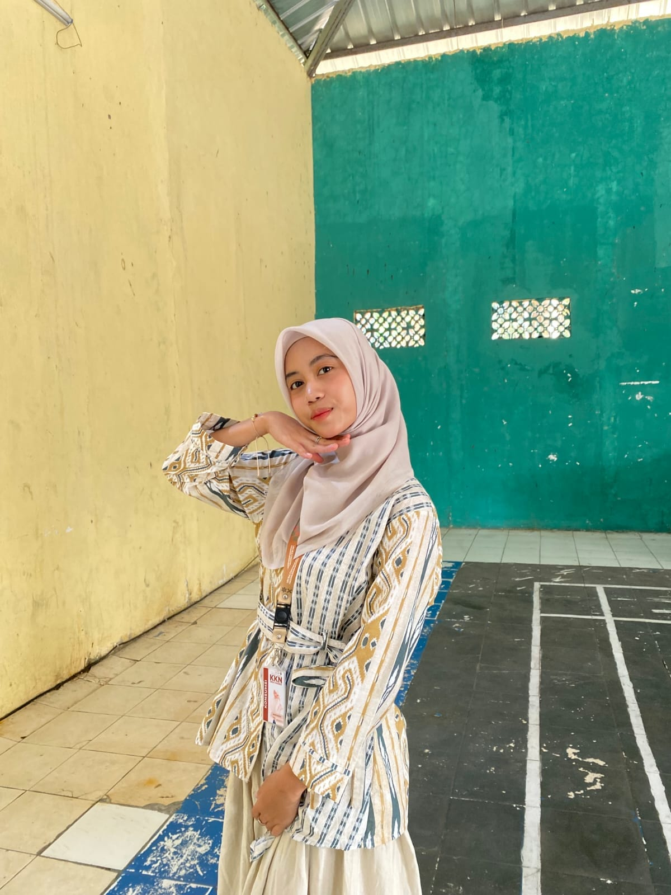
SOLO_1A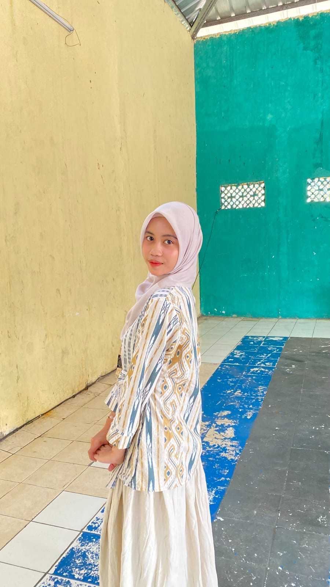
SOLO_1B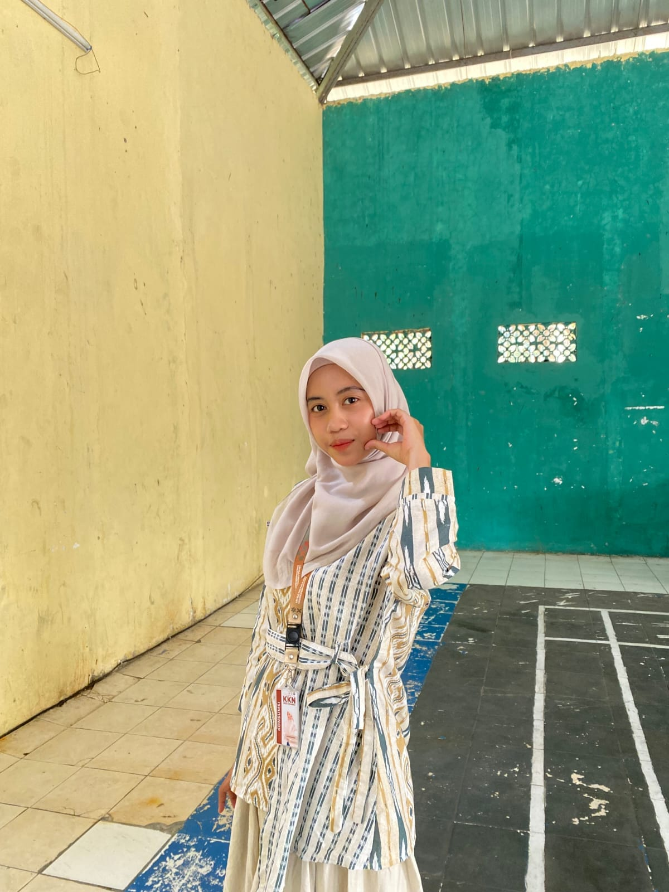
SOLO_1CEvery story has a first page.
Maybe this is ours.
A Little Something For You
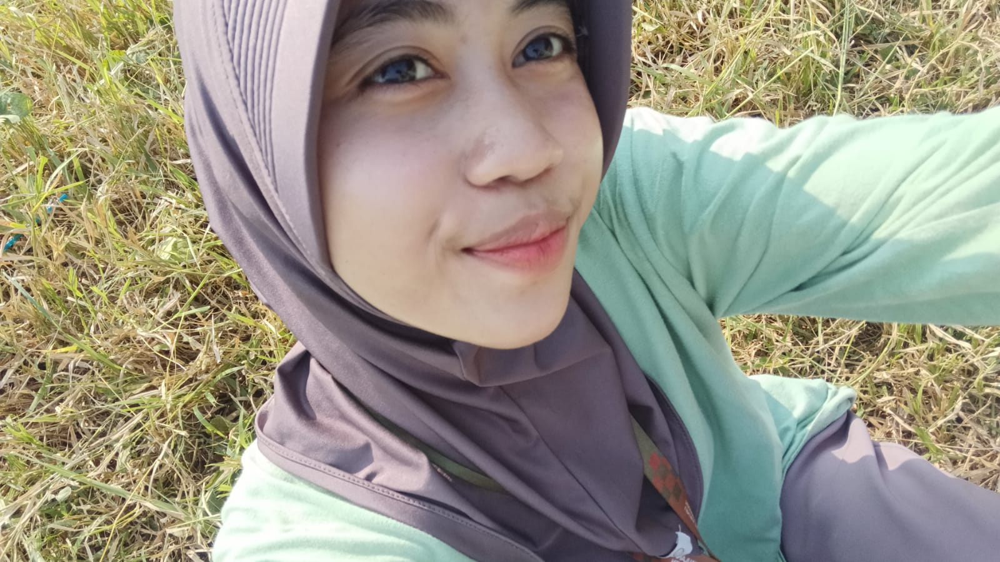
MAIN_PHOTOReplace with main photoBefore this became our story,
there was simply you.
Chapter 01

SOLO_1A
SOLO_1B
SOLO_1CEvery story has a first page.
Maybe this is ours.
Chapter 02
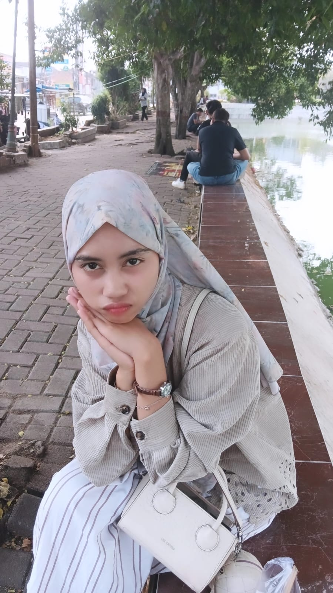
SOLO_2A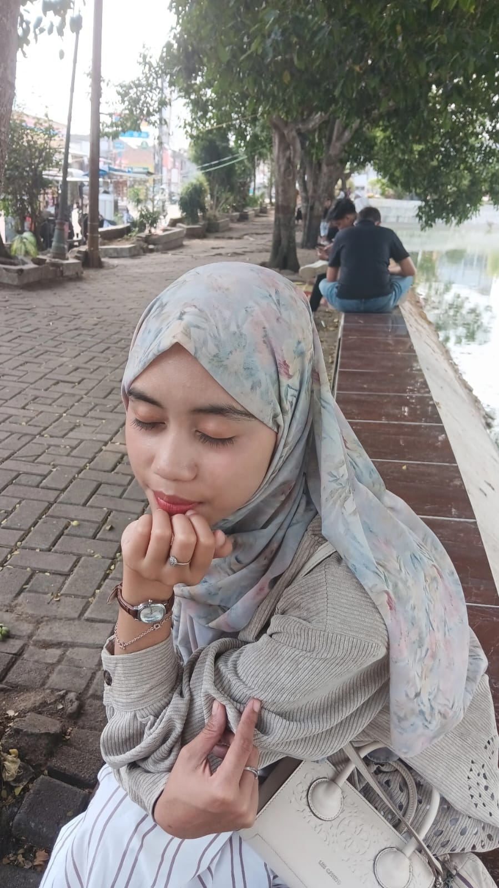
SOLO_2BThere are smiles that look beautiful.
And then there is yours.
Chapter 03
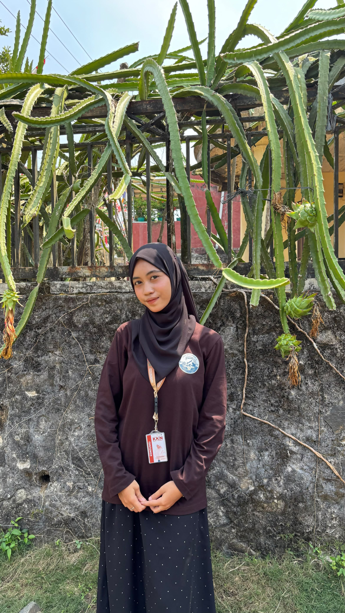
SOLO_3A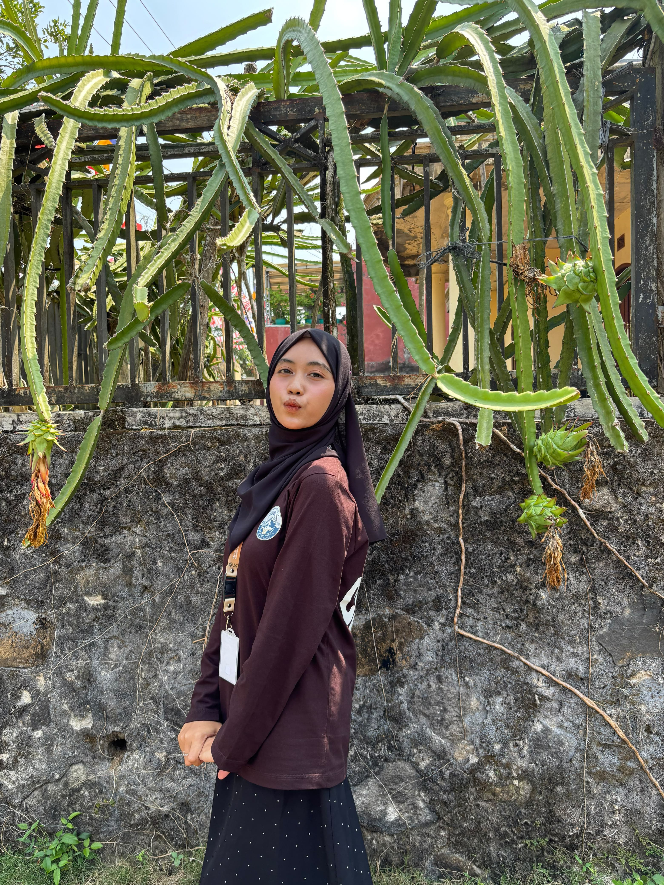
SOLO_3BSome of the best things are the ones
that do not need an audience.
Chapter 04
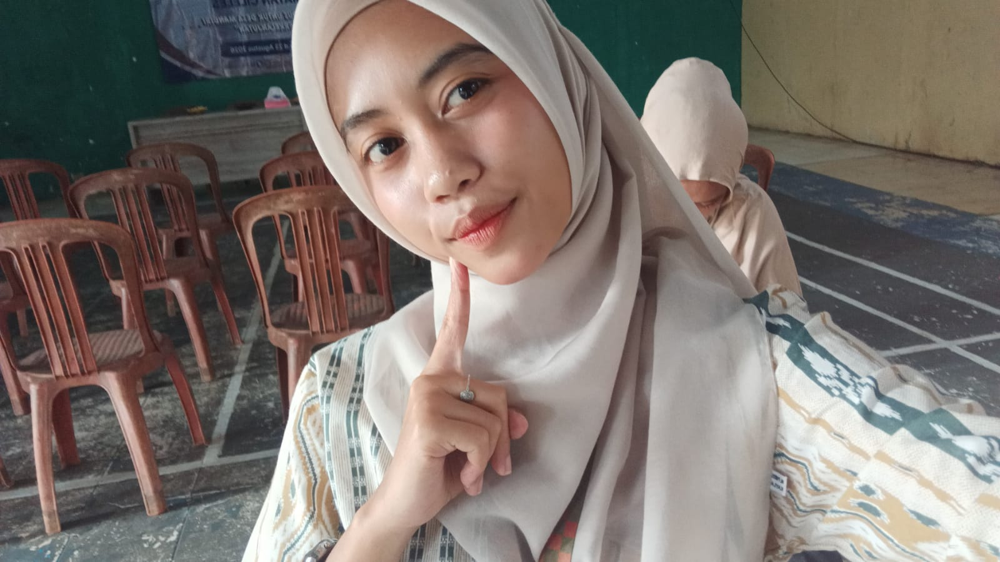
SOLO_4AIt is the small things that stay with you
long after the big moments fade.
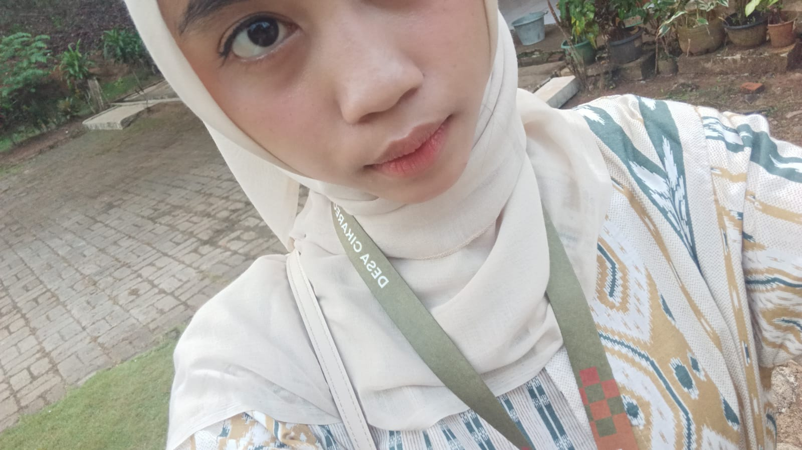
SOLO_4BAnd then somehow...
this story became ours.
Two people. One little story.
Chapter 05
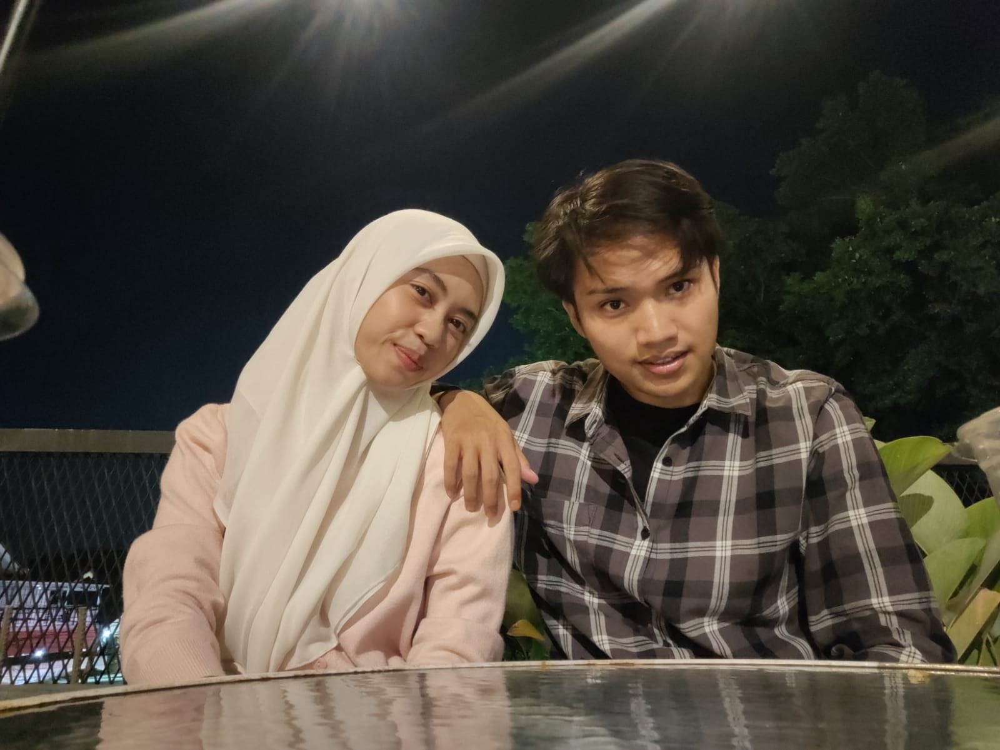
COUPLE_01Replace with couple photo 1Two people.
One little story.
Chapter 06
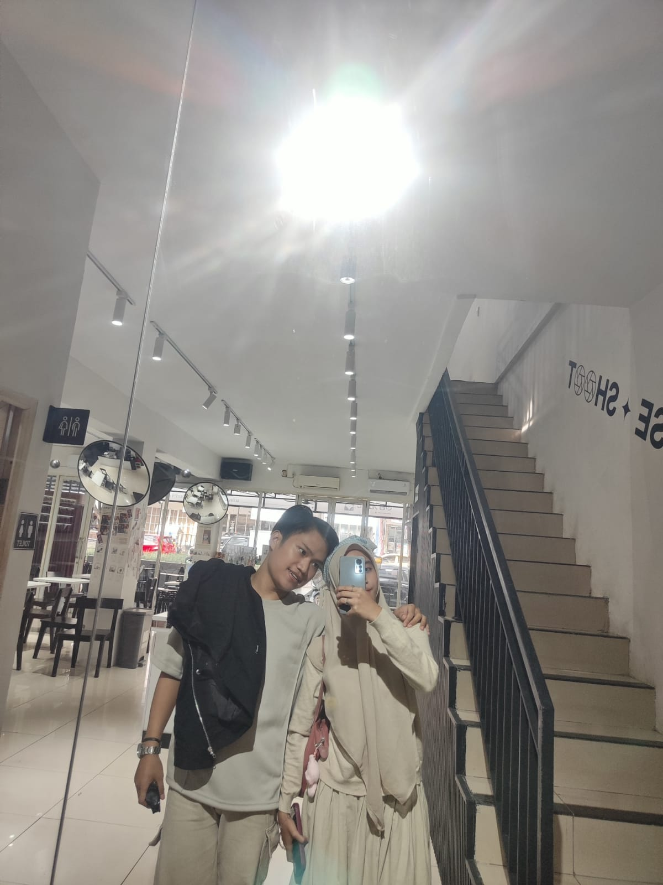
COUPLE_02Replace with couple photo 2I do not think it is always about the big moments.
Sometimes, it is just being there.
Chapter 07
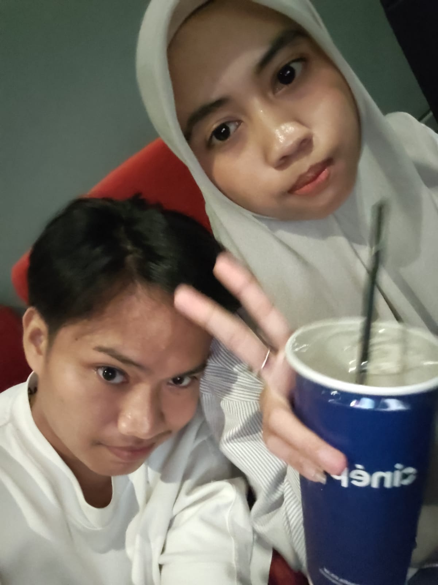
COUPLE_03Replace with couple photo 3Some memories do not need a reason
to become your favorites.
Chapter 08
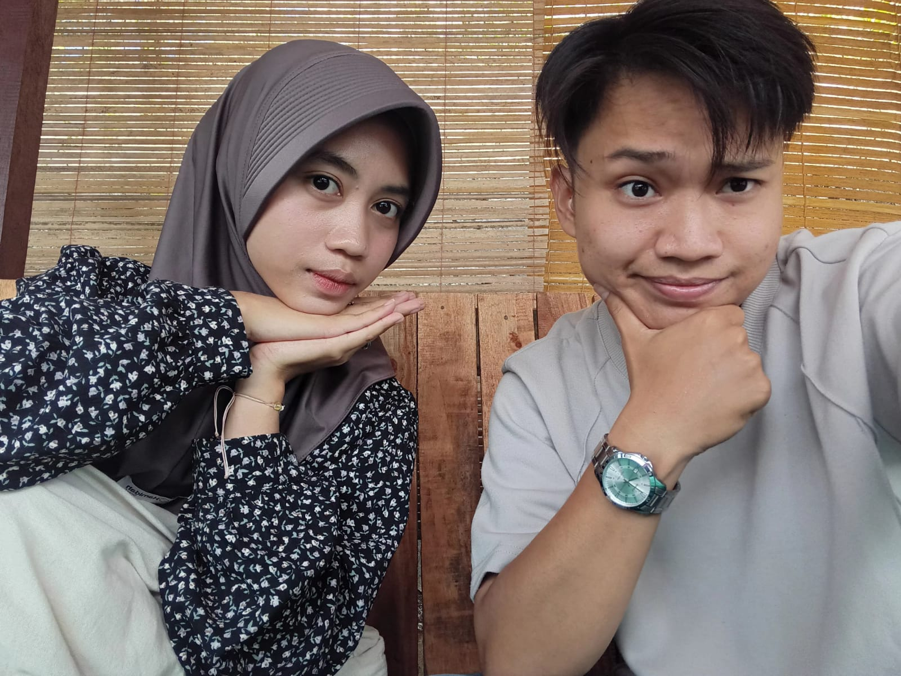
COUPLE_04Replace with couple photo 4If I could keep one thing from all these moments,
I would keep the feeling of being with you.
Dear Marhamatu,
Before anything else, Happy Birthday.
25 August 2005 was the day someone who would someday mean so much to me came into this world.
I am grateful that our paths crossed.
And whatever chapters come next, I hope we get to write some of them together.
Happy Birthday, Marhamatu.
To Be Continued
Not written yet.
Maybe we will fill these pages together.
You made it to the end.
But I do not think I could ever fit everything I want to say into one website.
Happy Birthday, Marhamatu.
25.08.2005
This is only the beginning.